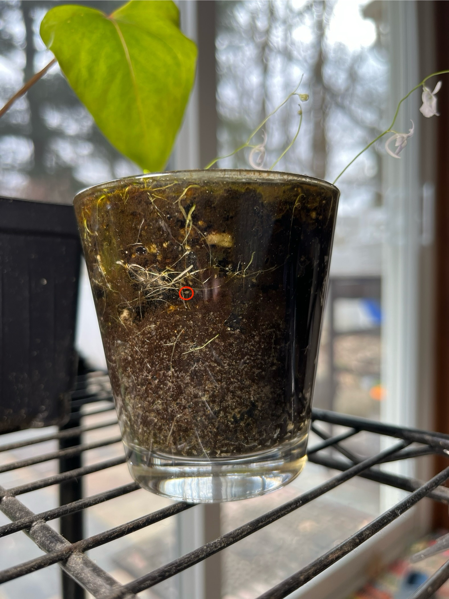
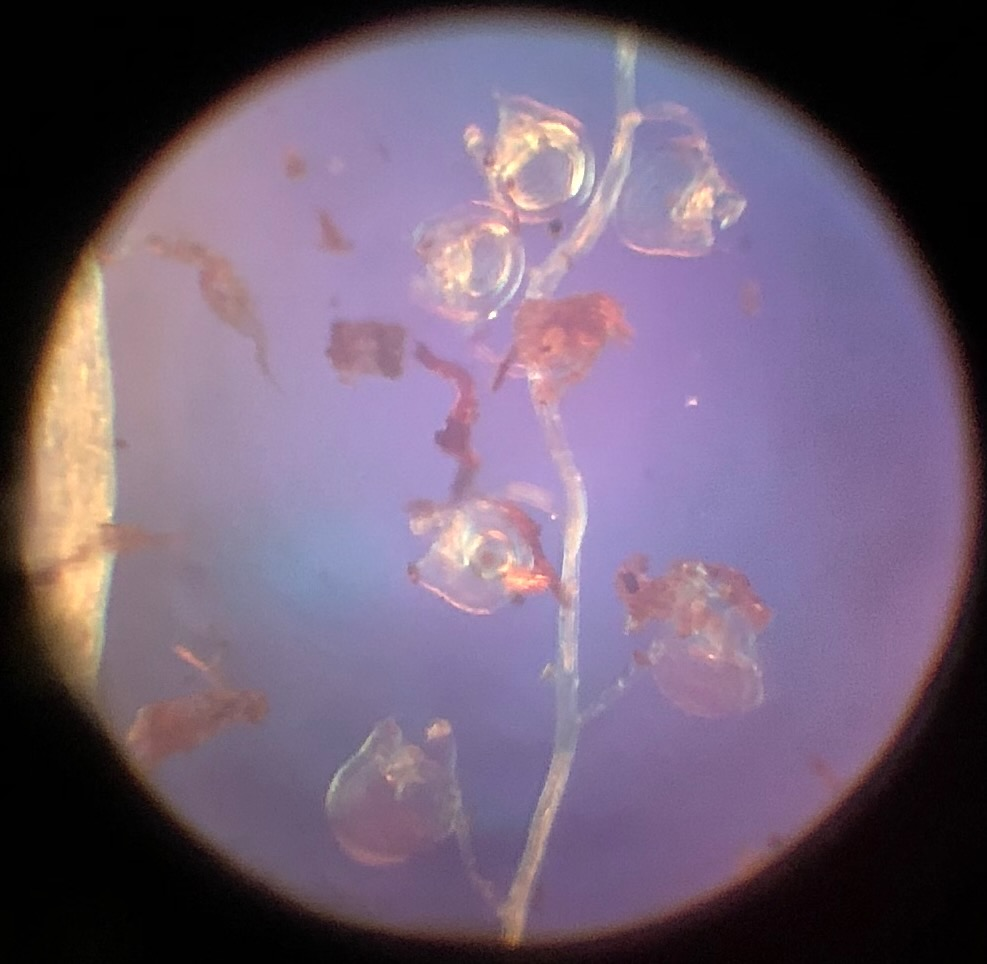
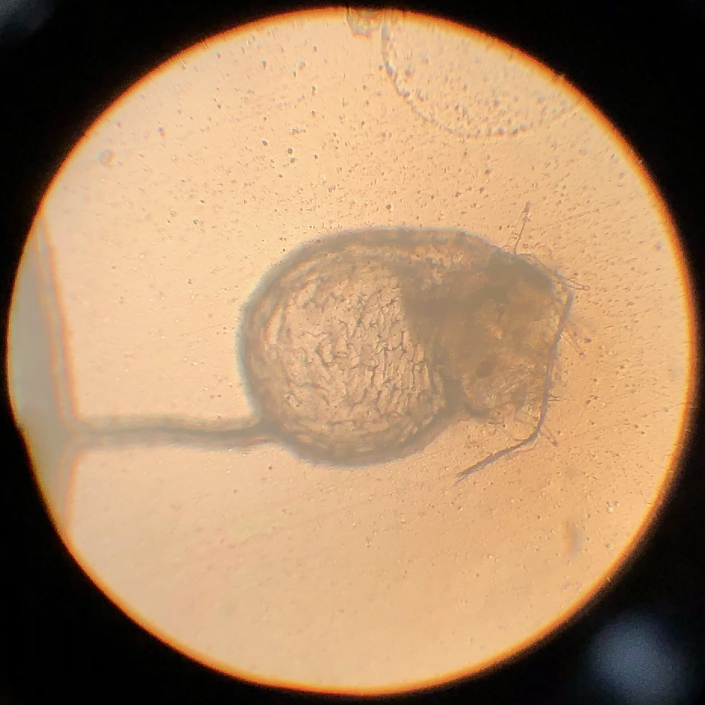
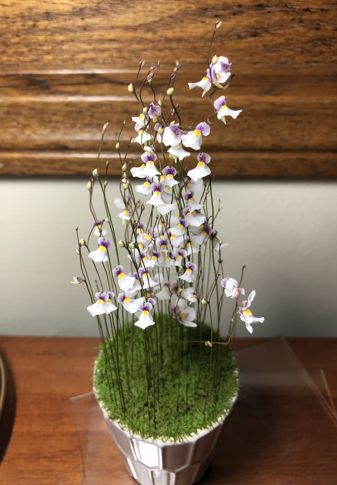
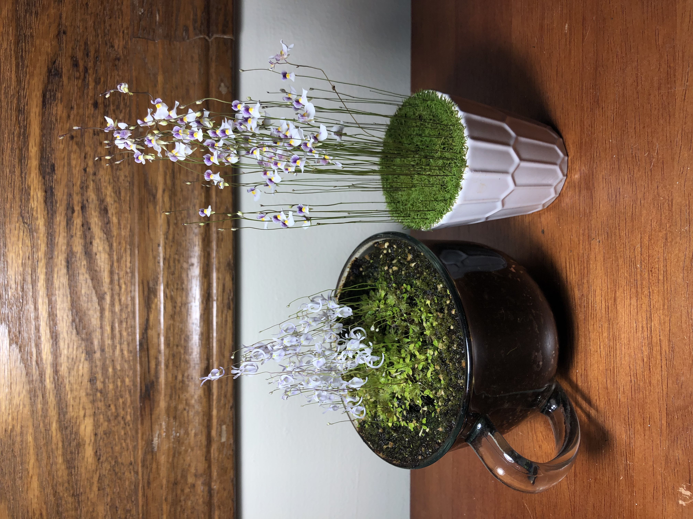
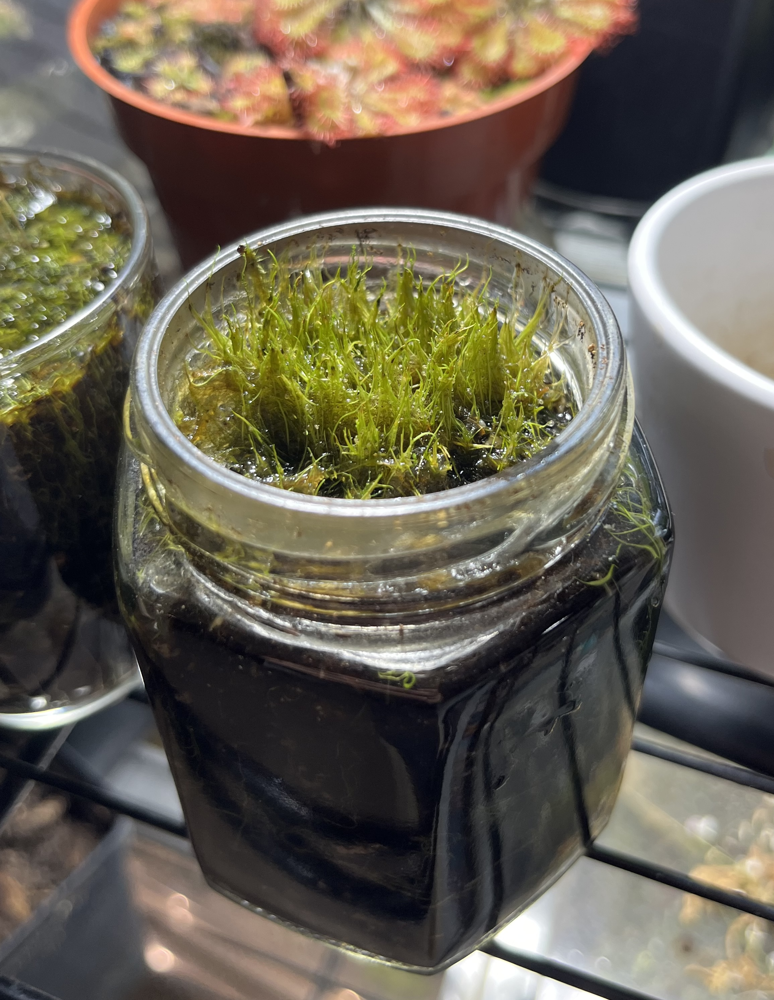
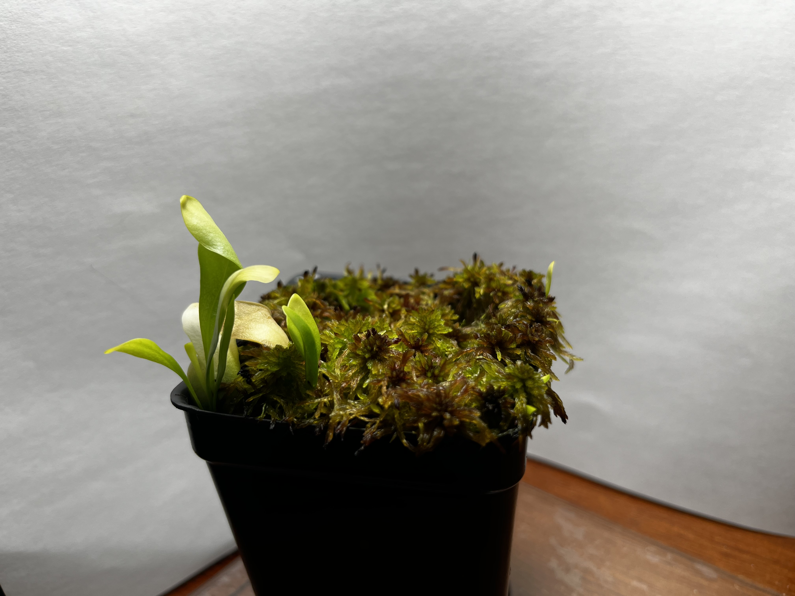

Introduction
For as long as I can remember, plants have been an area of interest to me. Recently, I have acquired a hobby of collecting specifically carnivorous plants, which I find particularly interesting. One genus that really embedded itself into my life was, as you probably guessed by this post's title, the genus Utricularia, commonly called bladderworts or utrics (informally).
Carnivory
I will begin by explaining how this plant is carnivorous. Underneath the substrate, along the plant's roots, are hundreds of tiny traps--"bladders"--that can catch tiny arthropods.
An example of utric roots. I circled a trap to give a sense of scale.
U. blanchetii traps lining its root.
At the opening of the trap, there are these trigger hairs which, when touched, cause the trap to open itself rapidly like a bellows sucking air into itself; this action then (hopefully) causes the critter that triggered the trap to get sucked into the trap along with the water. The trap then proceeds to digest its prey while pumping out water that got sucked in, getting it ready for the next prey.
You can see the tentacle-looking trigger hairs on the right.
This ability to catch and digest prey allows this plant to attain the necessary nutrients for growth. The reason for this carnivorous nature is that, in the wild, these plants usually live in places with a general lack of nutrients in the substrate, which would cause most plants to grow poorly.
Bladderworts In Captivity
Today, utrics are quickly becoming a favorite among carnivorous plant collectors for their small size, relative ease of care (depending on which species), and beautiful flower displays.
My personal favorite so far: U. blanchetii.
There are three major groups of bladderworts: aquatic, terrestrial, and epythitic. The easiest utrics are the terrestrial ones, because they dont need (or at least won't mind missing) high humidity, or supplemental heat. I have three terrestrial utrics: Utricularia blanchetii, U. sandersonii, and U. fulva. Each of them have small, but very pretty flowers.
My Utricularia sandersonii on the left, and U. blanchetii on the right.
Utricularia fulva. Unfortunately, I haven't been able to get this one to bloom yet.
Epythitic utrics, sometimes referred to as orchid-like utrics, live naturally growing on rocks and trees in moist rainforest environments. They like to be kept moist, but aerated. They are the favorite of many because of their beautiful large flowers.
My Utricularia alpina which has yet to flower for me.

A U. alpina flower. Source: Wikipedia
That is the end of this post. I hope that I have inspired you to dig deeper into your own interests to see what lies, waiting to be discovered.